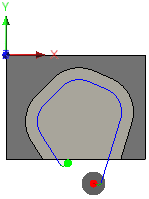

<div id="doSeparateTangentialEndExtension"><p>異なる終端延長の長さの値を入力するには、このオプションを選択します。</p>
<table class="tipTable" cellspacing="10">
<tr>
<td><center></center></td>
</tr><tr>
<td><center><p><b>16mm の始端延長<br>5mm の終端延長</b></p></center></td>
</tr></table>
</div>